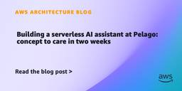
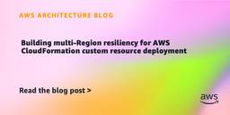
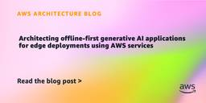
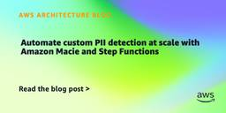
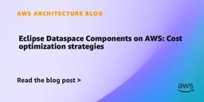
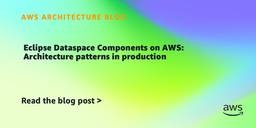
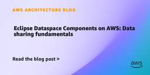

AWS Architecture Blog
フィード

Building a serverless AI assistant at Pelago: concept to care in two weeks 1
1
AWS Architecture Blog
Healthcare organizations face a critical scaling challenge – how to maintain deeply personalized patient interactions as member bases grow, without overwhelming care teams or compromising quality. At Pelago, a digital health company specializing in substance use disorder support, the engineering team found a way to build an AI-powered solution to address this challenge using AWS […]
2日前

Building multi-Region resiliency for AWS CloudFormation custom resource deployment 1
AWS Architecture Blog
AWS CloudFormation is the foundational tool of infrastructure-as-code for thousands of organizations running workloads on AWS. But as teams push the boundaries of what CloudFormation can do natively, custom resources have emerged as a powerful extension mechanism that unlocks a broad range of possibilities. Yet, when it comes to building resilient, multi-Region deployments with custom […]
2日前

Architecting offline-first generative AI applications for edge deployments using AWS services 1
AWS Architecture Blog
According to Siemens’ 2024 report The True Cost of Downtime, Fortune 500 companies lose an estimated $1.4 trillion annually because of unplanned downtime. This downtime is often worsened by a lack of skills to detect and resolve issues quickly. Generative AI offers a promising path to address this, but deploying these capabilities in industrial environments […]
2日前

Automate custom PII detection at scale with Amazon Macie and Step Functions 1
AWS Architecture Blog
Organizations in regulated industries like financial services, insurance, healthcare, and government ingest large volumes of data containing personally identifiable information (PII). Your applications, claims processing systems, partner data feeds, and internal workflows produce files that may include names, addresses, Social Security numbers, and domain-specific identifiers such as policy numbers, member IDs, and medical record numbers. […]
2日前

Eclipse Dataspace Components on AWS: Cost optimization strategies 1
AWS Architecture Blog
When you deploy Eclipse Dataspace Components (EDC) connectors on AWS, one of the first challenges you face is predicting and controlling the cost of the required infrastructure. Without clear benchmarks, it is difficult to make informed decisions about workload sizing, environment configuration, and long-term investment. Part 1 of this 3-part blog series covered the fundamentals […]
7日前

Eclipse Dataspace Components on AWS: Architecture patterns in production 1
AWS Architecture Blog
Running Eclipse Dataspace Components (EDC) connectors in production on AWS requires deliberate architecture decisions around isolation, managed services, and security layering. In Part 1 of this series, we covered the fundamentals of data space architectures and EDC per the International Data Space Association’s (IDSA) standards. If you are new to EDC, we recommend starting there. […]
7日前

Eclipse Dataspace Components on AWS: Data sharing fundamentals 1
AWS Architecture Blog
This three-part blog series guides you through implementing Eclipse Dataspace Components (EDC) on AWS, from foundational concept to production deployment. Part 1 establishes the theoretical foundation with IDSA standards, the Dataspace Protocol (DSP), and core EDC architecture. Part 2 provides production-ready AWS deployment patterns using services like Amazon Elastic Container Service (Amazon ECS), Amazon Aurora, […]
7日前

Prioritize your AWS Health alerts using AWS User Notifications
AWS Architecture Blog
If you run critical workloads on AWS, such as a contact center on Amazon Connect Customer, database workloads on Amazon Relational Database Service (Amazon RDS), or hybrid connectivity through AWS Direct Connect, service health events demand your attention. But not all events are equal. An operational issue, a scheduled maintenance window, and a deprecation notice […]
8日前
How bitdrift scaled to 121 million concurrent gRPC connections on Amazon CloudFront for live telemetry sporting events
AWS Architecture Blog
When 121 million mobile devices establish persistent gRPC connections to your origin infrastructure within seconds of a live broadcast, the routing policy behind your DNS records matters far more than it does at normal traffic levels. The wrong policy can concentrate all your connections onto a single origin endpoint, turning a scaling success into an […]
9日前
How Mapfre Insurance modernized fraud claims with Amazon EMR Serverless
AWS Architecture Blog
Insurance fraud remains a significant challenge for the insurance industry because fraudulent claims can increase loss costs, reduce trust, and consume investigation capacity that could otherwise be focused on serving customers. Traditional fraud detection approaches typically rely on rules-based controls, manual investigation triggers, historical claim patterns, and structured-data-only analysis. These approaches are useful for known […]
10日前
Unlocking the future of video data: March Networks cloud storage on AWS
AWS Architecture Blog
Enterprise video surveillance is operating at an unprecedented scale as organizations across retail, banking, quick-service restaurants (QSR), convenience stores, and transportation networks generate petabytes of video data across thousands of distributed locations. As retention requirements grow and organizations seek to extract more operational insights from video, traditional on-premise storage models are becoming increasingly difficult and […]
11日前
Specification-driven composition for flexible data workflows
AWS Architecture Blog
Specification-driven composition addresses a common scalability bottleneck in data pipelines. Data pipelines often start as simple scripts, but as they grow, you duplicate transformation logic and small changes cascade across multiple workflows. Copying and modifying data transformation logic across scripts leads to workflows that become difficult to manage at scale. Tracking what each pipeline does […]
15日前
S&P Global’s innovative disaster recovery strategy using Amazon FSx for NetApp ONTAP snapshots
AWS Architecture Blog
In this post, we explain how S&P Global Market Intelligence implemented an innovative disaster recovery solution for their Capital IQ platform using Amazon FSx for NetApp ONTAP. This solution enables immediate failover to read-only mode in a secondary region within 15 minutes, followed by full read-write recovery when needed. This approach achieves reduction in failover time while maintaining data consistency for global financial operations.
17日前
Lessons learned from scaling to 1 million Lambda functions
AWS Architecture Blog
In this post, we share our journey and the lessons learned from building and running a fully serverless, multi-account software as a service (SaaS) platform at scale. We’ll explore why true scale-to-zero is critical, how we handle quota management, why engaging AWS service teams early saved us from outages, and which unexpected practices emerged once we scaled from thousands to over a million functions.
25日前
Preventing data exfiltration in machine learning environments with Amazon SageMaker AI
AWS Architecture Blog
In this post, we demonstrate how iBusiness implemented a three-layered security architecture using Amazon SageMaker AI, virtual private cloud (VPC) endpoints, and Amazon WorkSpaces Secure Browser to prevent data exfiltration while maintaining data scientist productivity. You can adapt this approach to build secure machine learning environments that balance strict data protection with team scalability.
25日前
Dual-token authentication for Nakama game servers with Amazon Cognito on AWS
AWS Architecture Blog
In this post, you learn how to configure an Amazon Cognito User Pool for SRP-based game client authentication with no client secret. You will implement a Go runtime hook that validates Cognito JWTs and bridges player identity to Nakama sessions.
25日前
Secure multi-tenant RAG with Amazon Bedrock and Verified Permissions
AWS Architecture Blog
This post walks you through a two-layer, defense-in-depth authorization pattern for granular, intra-tenant access control in RAG applications. Defense in depth is a security strategy that uses multiple independent layers of protection. Each layer operates independently. If one layer is misconfigured, the other layer still enforces access control. The pattern runs on Amazon Bedrock, a fully managed service that offers a choice of high-performing foundation models (FMs) from Amazon and AI companies through a single API, along with a broad set of capabilities you need to build generative AI applications with security, privacy, and responsible AI.
1ヶ月前
Modernizing financial analytics with Amazon SageMaker Unified Studio
AWS Architecture Blog
Avanse Financial Services, India’s leading education loan providers, migrated to a cloud-native lakehouse architecture using Amazon SageMaker Unified Studio, which unified their data engineering, analytics, and artificial intelligence (AI) workflows in a single governed environment on AWS. In this post, we walk through their migration journey so you can adapt their approach to your own environment.
1ヶ月前
Architecting AI-powered resilience framework on AWS
AWS Architecture Blog
In this post, you’ll learn how to architect and implement a five-layer AI-powered resilience framework that automatically discovers dependencies, generates targeted experiments, and integrates with your existing Continuous Integration/Continuous Deployment (CI/CD) pipelines. First, we’ll explore the key challenges in resilience testing. Then, we’ll walk through the five-layer architecture that solves these challenges. Finally, we’ll show you how to implement this, with phased rollout guidance for pilot, expansion, and organization-wide deployment.
1ヶ月前
Reducing SMS OTP fraud with Vonage network-powered solutions and Amazon Cognito
AWS Architecture Blog
In this post, we show how Vonage network-powered solutions work with Amazon Cognito to enhance many mobile-first use cases with network-level identity verification. Vonage network-powered solutions are a composable stack of real-time mobile operator intelligence, silent authentication, and integrated fraud protection, which uses the CUSTOM_AUTH flow to complete identity verification in under 5 seconds, with zero user interaction.
1ヶ月前